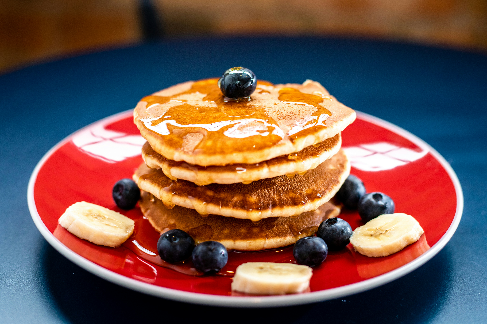

Back to Home
Pancakes Recipe

Description
This pancakes recipe is a quick and easy breakfast option that yields fluffy and delicious pancakes perfect for a weekend brunch or a cozy morning treat.
Ingredients
- 1 cup all-purpose flour
- 2 tablespoons sugar
- 1 tablespoon baking powder
- 1/2 teaspoon salt
- 1 cup milk
- 1 large egg
- 2 tablespoons melted butter
- 1 teaspoon vanilla extract
Instructions
- In a large bowl, whisk together the flour, sugar, baking powder, and salt.
- In another bowl, beat the egg and then whisk in the milk, melted butter, and vanilla extract.
- Pour the wet ingredients into the dry ingredients and stir until just combined. Be careful not to overmix; a few lumps are okay.
- Heat a non-stick skillet or griddle over medium heat. Lightly grease with butter or cooking spray.
- Pour 1/4 cup of batter onto the skillet for each pancake. Cook until bubbles form on the surface and the edges look set, about 2-3 minutes. Flip and cook for another 1-2 minutes until golden brown.
- Serve warm with your favorite toppings such as maple syrup, fresh berries, or whipped cream. Enjoy!